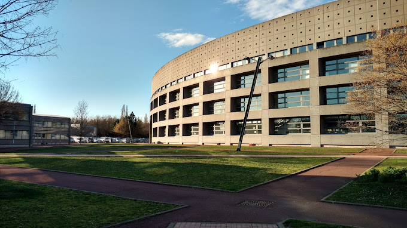

Formation
BUT Réseaux et Télécommunications – parcours Cybersécurité

2024 – 2027
Bachelor Universitaire de Technologie en Réseaux et Télécommunications, parcours cybersécurité, à l'IUT Clermont Auvergne (Aubière) : administration des réseaux et des systèmes, réseaux sécurisés multi-sites, services d'annuaires, téléphonie IP, fibre optique, pentest.
IMT Mines Alès – Ingénieur Informatique et Réseaux
Admissible en 2026
Déclaré admissible au cycle ingénieur Informatique et Réseaux par apprentissage d'IMT Mines Alès en 2026. Je n'ai pas pu l'intégrer faute d'entreprise d'accueil, et je recandidate pour la rentrée de septembre 2027.
Lycée Lafayette

2024
Obtention du baccalauréat général mention bien avec les spécialités mathématiques et numérique et sciences informatiques au lycée Lafayette.